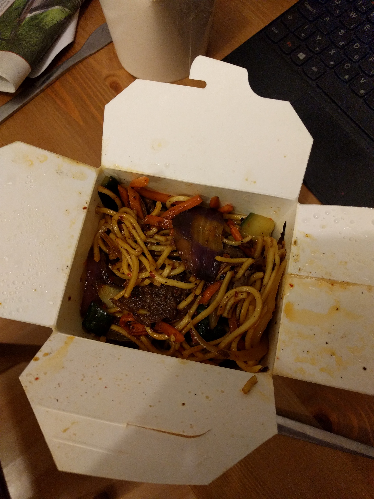

Korean spicy noodle

tasty, spicy noodle
We're making Spicy Gochujang Noodles, and I think it may become one of your new favorites.
ingredients
- Gochujang
- Soy Sauce
- Sesame oil
- Honey
- Lime Juice
- Garlic
- noodles
- vegetable oil
- bell peppers
- green onion
- sesame seeds
How to make
- Add the Gochujang some sesame oil, the honey and the soy sauce in bowl and mix
- Chop the veggies
- cook the noodles
- saute the veggies
- put in the cooked noddles
- poor the sauce
- mix
- ready